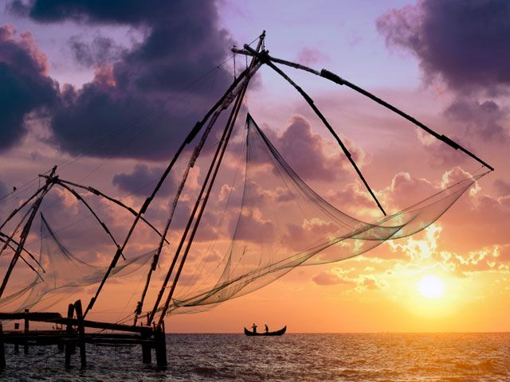
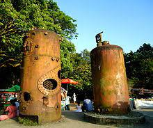

Fort Kochi – The Crowned ’Queen of Arabian Sea’
 
One of the top tourist places in Kerala, Fort Kochi is often the
gateway to God’s Own Country. The Queen of the Arabian has multiple
personalities. The city has a history, heritage and multi-ethnic culture.
Perfect for nature lovers, history buffs, and tourists, it is one of
the most visited travel destinations in Kerala. Fort Kochi has much to
offer, in terms of sights, food and experiences. With museums, palaces,
synagogues, Hindu temples, churches, heritage buildings, art galleries,
beaches. A charming seaside area, Fort Kochi is known for its Dutch,
Portuguese, and British colonial architecture, and elaborate bamboo
fishing nets at Fort Kochi Beach. St. Francis Church was the original
burial site of explorer Vasco da Gama.
WAY TO FORT KOCHI:-
<--BACK
HOME